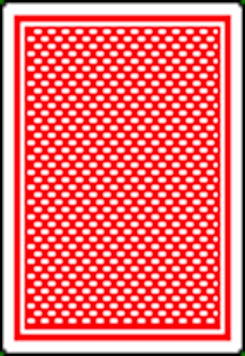

<div class="container">
    <h1>Room {{ room }}</h1>
    <h2 style="color:red">{{this.error}}</h2>

    <!--
        baralha-se

        ultima carta do array vai ser o trunfo

        joga a pessoa que esta ao lado esquerdo da pessoa que deu joga

        if is my turn jogo carta

        joga a pessoa que esta ao lado esquerdo que fez a ultima jogada

        ao fim das 4 jogarem guarda-se no historico e no array de quem ganhou a ronda

        trunfo ganha a jogada a nao sei que aja uma com mais pontos ou com maior numero caso sejam de 0 pontos

        guardar o historico das jogadas num array para caso seja permido o botao renuncia

        cada ronda ganha guarda-se as cartas num array para contar no final
    !-->

    <div class="baralho">
        <div class=""><p style="text-align:center">Jogador </p></div>
        <div class="row">
            <div class="col-md-6">
                <p>Jogador </p>
                
            </div>
            <div class="col-md-6">
                <p style="text-align:right">Jogador </p>
                
            </div>
        </div>
        <div style="clear: both"></div>
        <div class=""><p style="text-align:center">Jogador </div>
    </div><br>

    <div *ngFor="let card of cards;  let i=index" > <!-- Baralho do Jogador!-->
        <template [ngIf]="i<10">
            <a (click)="getCardBaralho(card)"></a>
        </template>
    </div>

    <div style="clear: both"></div><br>


    <chat-room></chat-room>

</div>